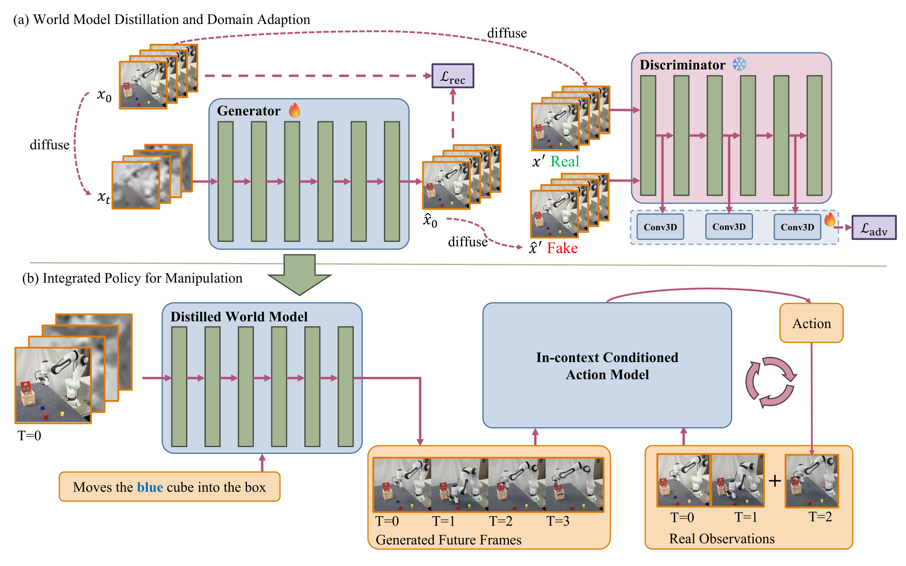
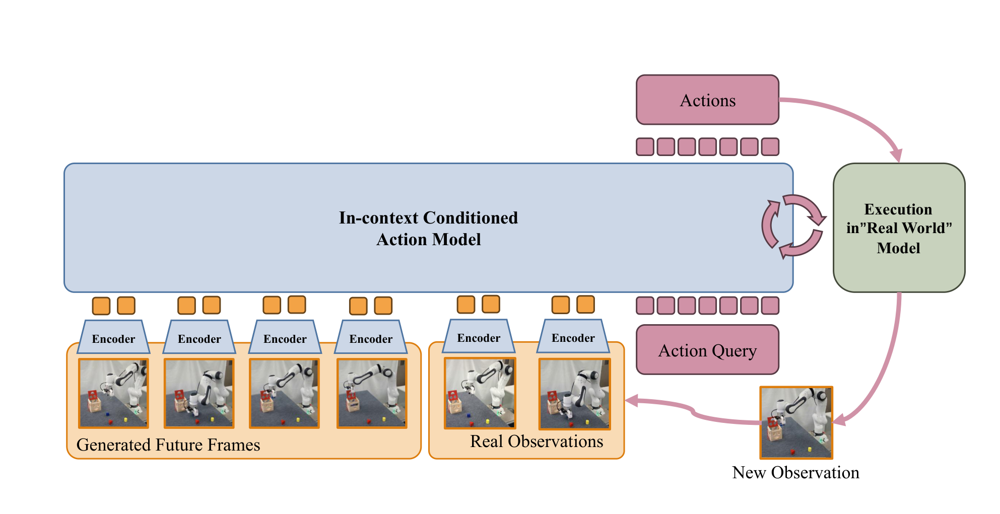
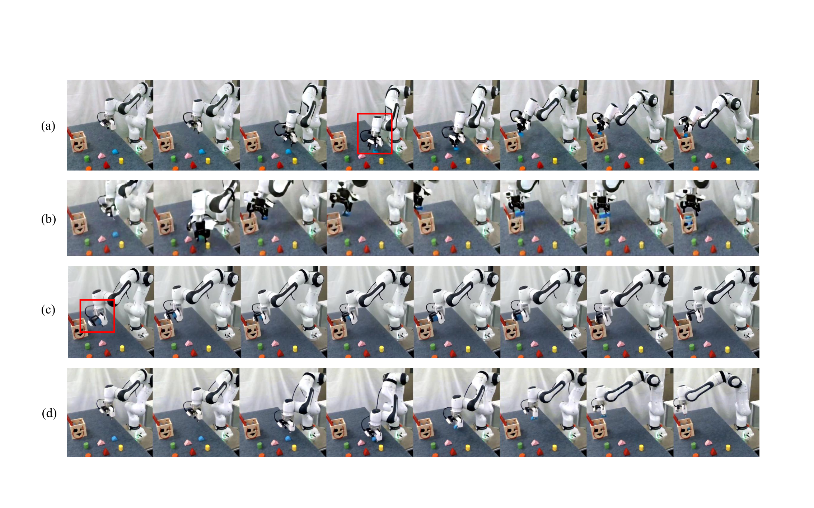
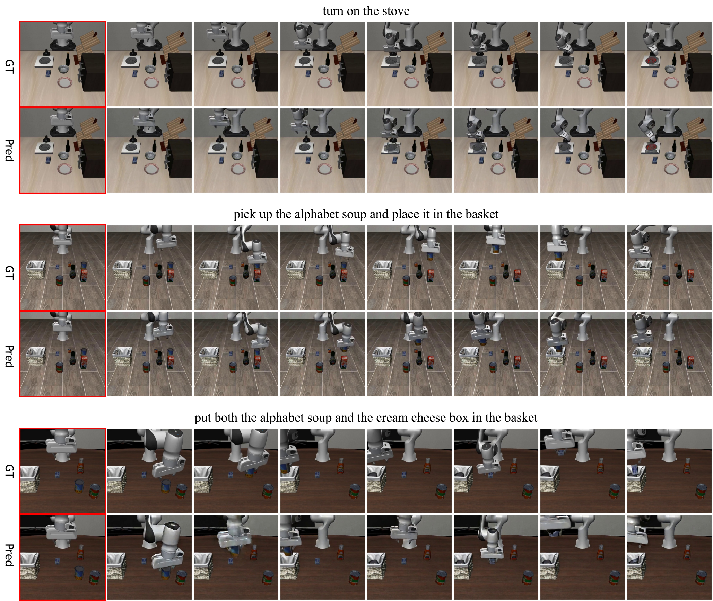

Say, Dream, and Act: Learning Video World Models for Instruction-Driven Robot Manipulation
1. 论文速览
| 论文要解决什么 | 解决指令驱动机器人操作中“语言能说清目标，但策略难以预判环境演化”的问题。VLM/VLA 模型可以理解任务语义，却不天然具备稳定预测未来物体、夹爪和空间关系的能力；已有 world model 又常有短视野、生成慢、空间不一致、难接到低层动作等问题。 |
|---|---|
| 作者的方法抓手 | 抓手是把通用视频生成模型适配成机器人 world model，并让它服务于 action model。具体包括：选择更适合机器人场景的 Cosmos-Predict2；用 domain adaptation 和 latent adversarial distillation 做少步快速视频生成；把任意长轨迹压缩成固定关键帧；训练 in-context conditioned action model，让生成视频作为示例而不是硬约束。 |
| 最重要的结果 | 在 LIBERO 上，Dream4manip 使用 1.22B 规模模型达到表格报告的 98.1% 总成功率，超过 OpenVLA-OFT、UniVLA、pi0、GR00t N1、DreamVLA 等基线；world model 适配后 FVD 从 Cosmos-2B 原始的 571.46 降到 211.84，DA+Dis 在 SSIM、PSNR、LPIPS 上进一步改善，并支持更少 denoising step 的推理。 |
| 阅读时要注意的点 | 不要只把它读成“视频生成加机器人控制”。关键是三处接口设计：第一，生成模型用空间一致性指标筛选；第二，视频被压缩成关键帧，避免动作步和视频帧严格对齐；第三，action model 同时看生成未来和真实历史观测，用真实观测纠正生成误差。因此结果是否可信，要看 world model 的质量、视频到动作的条件方式、闭环执行是否真正缓解生成误差。 |
一句话贡献
作者提出一个由视频 world model 和 in-context action model 组成的机器人操作框架，让策略在执行前“梦到”未来状态，再把未来状态作为上下文转成动作。
方法关键词
Video World Model Cosmos-Predict2 Latent Adversarial Distillation Length-Agnostic Keyframes In-Context Action Model
2. 研究问题与动机
2.1 为什么机器人需要“未来想象”
指令驱动操作的困难不只是把语言解析成目标，而是要在复杂场景中推断“如果我这样动，物体、夹爪和目标区域会怎样变化”。传统 VLA 或 VLM-based policy 倾向于把图像和语言直接映射到动作，但缺少显式的未来状态预测，容易在空间关系、物体引用和长任务组合上失误。
world model 的直觉是把预测未来作为中间变量：如果模型能生成任务完成过程中的未来视觉状态，action policy 就不必仅凭当前图像猜动作，而可以参考一个“预期轨迹”。这篇论文试图证明：高质量的视频生成模型经过机器人领域适配后，可以成为低层策略可利用的未来上下文。
2.2 现有 video world model 的缺口
作者指出的缺口主要有三类。第一，很多机器人 world model 只能预测短 horizon 或少量帧，难以表达完整任务进展。第二，通用视频生成模型虽然视觉质量高，但在机器人 embodiment、夹爪形态、相机视角和物体交互上容易不一致。第三，视频生成扩散模型推理慢，不适合闭环机器人控制。
因此本文的技术路线不是从零训练一个小 world model，而是从大规模视频模型中选择一个机器人场景更可用的基座，再用领域适配和蒸馏把它变快、变稳，并通过 action model 的条件设计把生成误差限制在可控范围内。

4. 方法详解
4.1 总体框架：Say, Dream, and Act
Dream4manip 的结构可以拆成三个阶段：
- Say: World Model。根据语言指令和当前观测生成任务相关未来视频。这里重点是选一个在机器人视频上更稳的基座，并做领域适配与蒸馏。
- Dream: Length-Agnostic World Imagination。把任意长演示轨迹压缩成固定数量关键帧，让视频想象不需要和动作执行步一一对齐。
- Act: In-Context Conditioned Action Model。把生成未来帧作为上下文示例，再结合真实历史观测输出动作块。这个 action model 的职责是把“想象的状态轨迹”落到实际机器人动作上。
4.2 Say: 选择并适配 world model
作者先比较多个 image-to-video 模型，重点不是通用视觉美观度，而是机器人操作中更关键的四类能力：embodiment consistency、referring success、interaction success 和 task completion。根据这些指标，论文选择 Cosmos-Predict2 作为基础模型，尤其强调 Cosmos-2B 在 referring 和 interaction 上表现稳定，且计算成本低于 14B 模型。
在适配阶段，Cosmos-Predict2 的 diffusion transformer \(T_\theta\) 接收 noisy latent \(x_t\) 和条件 \(cond\)，输出去噪 latent \(\hat{x}_0\)。image-to-video 条件通过把第一帧替换为 clean latent 注入到 \(x_t^{cond}\) 中。论文写作中使用的去噪形式为：
少步蒸馏使用的噪声 schedule 是：
实验中默认 \(T_g=8\)。这个式子的作用是把原本多步的 denoising 轨迹压缩到少量生成步，使 world model 能更接近闭环控制需求。
4.3 Latent adversarial distillation
论文的蒸馏不是简单对像素做回归，而是在 latent 空间引入 adversarial learning。判别器 \(D\) 由 Cosmos-Predict2 的 pretrained DiT 权重初始化，并在中间特征上接轻量 3D convolution heads，输出 pixel-wise score map。训练时冻结 DiT backbone，只优化卷积 head，这相当于复用基座模型已有的视频先验来判断生成 latent 是否像真实 latent。
判别器的目标是把 clean latent \(x_0\) 判为正，把生成器去噪得到的 \(\hat{x}_0\) 判为负。为了避免判别器只看过于容易的伪影，论文在输入判别器前额外加噪：令 \(\log(\sigma') \sim \mathcal{N}(0,1)\)，把 \(x_0\) 和 \(\hat{x}_0\) 扩散成 \(x'\) 和 \(\hat{x}'\)。判别器和生成器损失为：
同时保留 reconstruction loss：
默认 \(\lambda=0.1\)。论文强调 reconstruction loss 也用于同一训练迭代中的 domain adaptation，其中 \(\log(\sigma)\sim\mathcal{N}(0,1)\)。这意味着 domain adaptation 和少步 distillation 不是两个完全割裂的训练目标，而是在同一个生成器更新中共同约束视频质量和领域匹配。
4.4 Dream: 任意长度轨迹的关键帧想象
机器人演示轨迹的长度会随任务和执行策略变化，如果要求视频帧和动作步严格对齐，world model 很容易被不同任务长度拖住。本文用一个简单但关键的压缩函数 \(S(\tau)\) 把轨迹 \(\tau\) 压成固定数量的关键帧：
实验中使用 \(n=93\)。这一步的意义是让 world model 学的是“任务进展的视觉摘要”，而不是某个固定控制频率下每一步的精确帧。对 action model 来说，生成视频更像一个可参考的未来示例，而不是必须逐帧追踪的轨迹。
4.5 Act: In-context conditioned action model
Action model 的核心设计是把生成视频当作 in-context example。输入包含语言指令、生成的未来关键帧和真实历史观测，输出每个观测对应的 action chunk。这样做有两个好处：第一，生成视频提供高层任务进展和目标状态；第二，真实历史观测保留实际机器人和场景几何，用于纠正 world model 的空间误差。

从组会角度看，这一设计是本文最需要讲清的接口：world model 不直接输出动作，也不要求未来视频完全真实；它给出“任务应该朝哪里走”的视觉上下文，action model 再基于真实观测闭环地产生动作。
5. 实验与结果
5.1 实验设置
仿真实验主要在 LIBERO benchmark 上进行，覆盖 Spatial、Object、Goal、Long 四类任务。论文描述每个 task suite 约有 500 条训练样本，并在测试时对每个 suite 使用 10 个测试 subtask sample，每个执行 50 次，即每个 suite 500 次测试运行。真实机器人实验使用 Franka 7-DoF 机械臂、Intel RealSense D435 第三视角相机，并通过 3Dconnexion SpaceMouse 采集遥操作数据。
[附录] 附录给出了 spatial referring 指标的详细定义，这些定义对理解 world model 筛选很重要：EC 看 embodiment 是否在所有帧中保持一致；RSR 看生成中的机器人是否朝正确颜色物体移动超过一半距离；ISR 看是否成功抓取正确目标，并排除无接触移动、未接近目标或夹爪严重畸变；TCR/TSR 看目标物体是否最终被正确放入木盒。
5.2 World model 质量
作者先在 LIBERO 不同任务上评估适配后的 Cosmos-2B world model。指标覆盖 FVD、SSIM、PSNR、LPIPS，分别衡量视频分布、结构相似度、像素重建质量和感知差异。
| 任务 | FVD ↓ | SSIM ↑ | PSNR ↑ | LPIPS ↓ |
|---|---|---|---|---|
| L-10 | 104.00 | 0.82 ± 0.10 | 21.44 ± 6.97 | 0.06 ± 0.05 |
| L-Object | 177.04 | 0.89 ± 0.05 | 25.30 ± 5.47 | 0.04 ± 0.03 |
| L-Spatial | 119.32 | 0.85 ± 0.09 | 25.16 ± 6.14 | 0.03 ± 0.03 |
| L-Goal | 127.86 | 0.88 ± 0.07 | 26.12 ± 6.06 | 0.03 ± 0.02 |
更关键的是与其他视频模型和训练变体比较：
| 模型 | FVD ↓ | SSIM ↑ | PSNR ↑ | LPIPS ↓ |
|---|---|---|---|---|
| WAN2.2-14B | 714.24 | 0.63 ± 0.15 | 21.49 ± 3.98 | 0.11 ± 0.05 |
| WAN2.2-14B-Dis | 578.62 | 0.62 ± 0.18 | 21.58 ± 4.46 | 0.09 ± 0.06 |
| C-2B | 571.46 | 0.70 ± 0.10 | 22.09 ± 5.78 | 0.11 ± 0.05 |
| C-14B | 522.66 | 0.67 ± 0.11 | 21.56 ± 5.95 | 0.12 ± 0.05 |
| C-14B-Droid-F.T. | 1098.24 | 0.23 ± 0.04 | 14.73 ± 0.67 | 0.26 ± 0.05 |
| C-2B-DA | 211.84 | 0.82 ± 0.09 | 25.19 ± 5.48 | 0.05 ± 0.03 |
| C-2B-DA+Dis | 238.09 | 0.84 ± 0.11 | 26.82 ± 6.18 | 0.04 ± 0.04 |
这里要注意一个细节：DA+Dis 的 FVD 比 DA 稍高，但 SSIM、PSNR、LPIPS 更好，同时它支持少步推理。作者因此把 DA+Dis 视为质量和速度之间更实用的折中。

5.3 空间引用能力筛选
论文用 EC、RSR、ISR、TSR/TCR 等百分比指标比较 image-to-video 模型。这个实验的作用不是最终机器人成功率评估，而是说明为什么选择 Cosmos 系列，特别是为什么不简单认为大模型或 DROID fine-tuning 一定更好。
| 模型 | EC ↑ | RSR ↑ | ISR ↑ | TSR/TCR ↑ |
|---|---|---|---|---|
| Cosmos-2B | 1.58 | 96.00 | 86.00 | 70.00 |
| Cosmos-14B | 1.62 | 90.00 | 82.00 | 76.00 |
| Cosmos-14B-Droid | 1.58 | 78.00 | 58.00 | 34.00 |
| Wan-14B | 1.56 | 54.00 | 44.00 | 20.00 |
[附录] 论文还加入了 selected world model 的 OOD spatial referring 测试，但附录中该部分细节较少，主要用于补充说明 world model 在颜色/空间引用上有额外测试，而不是作为主结论支柱。
5.4 LIBERO 闭环策略结果
最终评估看 Dream4manip 作为 policy 的任务成功率。表格中 Dream4manip 使用 1.22B 规模，在四个 LIBERO suite 上均达到很高成功率。
| 方法 | 参数规模 | Spatial | Object | Goal | Long | Total |
|---|---|---|---|---|---|---|
| OpenVLA | 7B | 84.7 | 88.4 | 79.2 | 53.7 | 76.5 |
| OpenVLA-OFT | 7B | 97.6 | 98.4 | 97.9 | 94.5 | 97.1 |
| CoT-VLA | 7B | 87.5 | 91.6 | 87.6 | 69.0 | 81.1 |
| UniVLA | 7B | 96.5 | 96.8 | 95.6 | 92.0 | 95.2 |
| WorldVLA | 7B | 87.6 | 85.2 | 75.1 | 54.1 | 74.8 |
| 4D-VLA | 4B | 88.9 | 95.2 | 90.9 | 79.1 | 88.6 |
| SpatialVLA | 4B | 88.2 | 95.2 | 90.9 | 79.1 | 88.6 |
| pi0 | 3B | 96.8 | 98.8 | 95.8 | 85.2 | 94.2 |
| pi0-FAST | 3B | 96.4 | 96.8 | 88.6 | 60.2 | 85.5 |
| SmolVLA | 2.25B | 93.0 | 94.0 | 91.0 | 77.0 | 88.8 |
| GR00t N1 | 2B | 94.4 | 97.6 | 93.0 | 90.6 | 93.9 |
| DreamVLA | 0.57B | 97.5 | 94.0 | 89.5 | 89.5 | 92.6 |
| Dream4manip | 1.22B | 99.4 | 99.2 | 98.2 | 95.4 | 98.1 |
组会里可以把这张表作为主结果：Dream4manip 的优势不来自最大参数规模，而来自 world model 未来上下文和 action model 的闭环条件化。尤其 Long 任务中 95.4 的成功率说明“未来想象”对长任务并非只提供视觉装饰，而可能确实帮助了任务进展建模。

5.5 Denoising steps 消融
作者还研究了 Cosmos-Predict2 2B 在不同 denoising steps 下的速度和质量。核心结论是 10 steps 已经达到相对合理的质量速度折中，继续增加到 20 或 35 steps 质量提升有限但时间明显增加。
| D | Time ↓ | FVD ↓ | SSIM ↑ | PSNR ↑ | LPIPS ↓ |
|---|---|---|---|---|---|
| 1 | 10.72s | 1128.10 | 0.54 ± 0.14 | 17.89 ± 6.95 | 0.20 ± 0.07 |
| 5 | 19.43s | 1445.19 | -0.02 ± 0.29 | 12.43 ± 8.43 | 0.30 ± 0.10 |
| 10 | 29.80s | 579.90 | 0.70 ± 0.09 | 22.10 ± 5.78 | 0.11 ± 0.05 |
| 20 | 52.59s | 496.06 | 0.72 ± 0.09 | 22.48 ± 5.67 | 0.10 ± 0.04 |
| 35 | 86.20s | 488.06 | 0.72 ± 0.09 | 22.39 ± 5.70 | 0.10 ± 0.04 |
一个值得追问的点是：表中 10 steps 的生成时间仍接近 30 秒，这对于真正高频闭环控制不够低。因此本文的“fast”主要是相对原扩散生成步数而言，而不是已经完全满足实时机器人控制。
6. 复现要点
6.1 数据与评测
- 仿真数据: LIBERO 四类 suite，包括 Spatial、Object、Goal、Long。训练样本量按论文描述约为每 suite 500 条，测试每 suite 500 次执行。
- 真实机器人: Franka 7-DoF、RealSense D435 第三视角、SpaceMouse 遥操作采集。
- World model 筛选: 使用 EC、RSR、ISR、TSR/TCR，不只看 FVD/SSIM 这类通用视频指标。
- Policy 评估: 关键是闭环执行成功率，而不是离线 action prediction loss。
6.2 World model 训练配置
论文实现基于 Cosmos-Predict2，优化器为 FusedAdamW，学习率 \(2^{-14.5}\)，\(\lambda\) 使用 linear scheduler，warm-up 为 0，single-cycle 长度 1000，\(f_{\max}=0.6\)、\(f_{\min}=0\)，使用 FSDP、context parallel size 2，并启用 EMA。LIBERO 上 world model 训练 10,000 iterations，真实世界数据上训练 1,000 iterations。
6.3 Action model 训练配置
Action model 初始化 VLM 为 Qwen2.5，LoRA rank 为 64，使用 8 张 GPU，总 batch size 128。训练时把 future video predictions 作为上下文，并均匀采样 8 帧历史视频作为 conditioning，学习率 \(2\times 10^{-4}\)，训练 20,000 steps。
6.4 复现风险清单
- Cosmos-Predict2 基座依赖: 复现需要能访问同等基座模型和视频 VAE/DiT 实现，否则 world model 质量不可比。
- 指标标注成本: EC、RSR、ISR、TSR/TCR 不是简单脚本指标，尤其 referring 和 interaction 成功可能需要人工或额外判定规则。
- 闭环执行细节: action chunk 长度、观测历史窗口、重新生成 future frames 的频率都会影响最终成功率，论文正文只给出主要训练配置。
- 生成视频误差传播: world model 的空间错位可能被 action model 部分纠正，但如果生成目标状态完全错误，policy 仍会被误导。
7. 分析、局限与边界
7.1 这篇论文最有价值的地方
最有价值的地方不是某个单独模块，而是把视频生成模型接入机器人动作学习时做了比较完整的接口设计。作者没有直接让 video world model 输出控制，也没有假设生成视频逐帧完美，而是把它作为 in-context future example，与真实历史观测共同输入 action model。这使得世界模型负责“给出任务进展的视觉先验”，动作模型负责“在真实场景中执行并纠偏”。
第二个价值点是评测标准更贴近机器人操作需求。论文没有只用 FVD、SSIM、PSNR、LPIPS 判断 world model，而是额外定义 embodiment consistency、referring success、interaction success 和 task completion。这让“什么样的视频生成模型适合机器人”这个问题变得更具体。
7.2 结果为什么站得住
结果相对站得住有三层原因。第一，作者先用机器人相关指标筛选 world model，再用通用视频质量指标验证 domain adaptation 和 distillation 的收益，避免只凭视觉主观图说服读者。第二，policy 结果在 LIBERO 四个 suite 上与大量 VLA/VLM 基线比较，且 Dream4manip 的参数规模并不是最大，说明提升不容易被简单归因于模型更大。第三，论文提供 denoising steps 消融和定性失败对比，能支持“适配和蒸馏影响质量/速度折中”的论点。
不过，“站得住”不等于没有缺口。最强的证据来自 LIBERO，真实机器人结果在源码文本中更多是设置说明和定性支撑；如果要证明泛化到更多 embodiment、多摄像头和复杂动态环境，还需要更大规模的真实世界闭环评测。
7.3 方法边界
- 速度边界: 即使蒸馏后，10-step 生成仍需要约 29.80 秒。对于高频实时控制，这更像低频规划或周期性重规划模块，而不是每个控制 tick 都运行的模型。
- 长 horizon 边界: 关键帧压缩降低了长度对齐压力，但 world model 的未来预测仍可能在动态、遮挡或拥挤场景中累积误差。
- 生成依赖边界: action model 能用真实观测纠正空间误差，但如果 world model 生成了错误目标、错误物体交互或错误最终状态，policy 会继承这种误导。
- embodiment 泛化边界: 作者承认扩展到多样 embodiment 和复杂多步任务需要更广泛预训练与更强的 embodiment-conditioned 表征。
7.4 可以怎样改进
一个自然方向是把 world model 的未来想象变成多候选分布，而不是单条视频：action model 可以基于多个可能未来做选择或加权，降低单次生成错误的影响。另一个方向是加入在线 consistency check，例如用真实观测与生成关键帧做偏差估计，当偏差过大时触发重新生成或切换到保守策略。
从系统角度，还可以研究更轻量的局部 world model：全局任务进展由大视频模型低频生成，局部接触和夹爪控制由小模型高频预测。这样可能更符合真实机器人控制的速度约束。
8. 组会问答准备
Q1: 这篇论文和普通 VLA 最大区别是什么？
普通 VLA 多数直接从当前视觉语言输入预测动作；本文显式加入 video world model，先生成未来任务进展，再让 action model 把未来帧和真实历史观测作为上下文输出动作。区别在于引入了可视化的未来状态中间变量。
Q2: 为什么不用生成视频直接做规划？
因为生成视频不是动作序列，也不保证几何精确。论文把生成视频当作 in-context example，而不是轨迹约束。真正输出动作的是 action model，它同时看真实观测，所以可以纠正部分生成误差。
Q3: Cosmos-14B 更大，为什么主线选 Cosmos-2B？
从筛选表看，Cosmos-14B 在 EC 和 TSR/TCR 上略优，但 Cosmos-2B 在 RSR 和 ISR 上最好，而且计算成本更低。对于闭环机器人系统，referring、interaction 和推理成本都很关键，所以 2B 是更实际的基座选择。
Q4: DA+Dis 为什么 FVD 不是最好还被采用？
DA 的 FVD 最低，但 DA+Dis 在 SSIM、PSNR、LPIPS 上更好，并服务于少步快速生成。FVD 衡量分布距离，不一定完全等价于机器人可执行性；本文关心的是质量、速度和空间一致性的折中。
Q5: 最需要质疑的实验点是什么？
主要是真实世界泛化和延迟。LIBERO 成功率很强，但真实机器人、不同 embodiment、复杂遮挡和长 horizon 动态场景还需要更充分闭环评估；同时 10-step 视频生成时间仍较长，实时系统如何调度 world model 是关键工程问题。